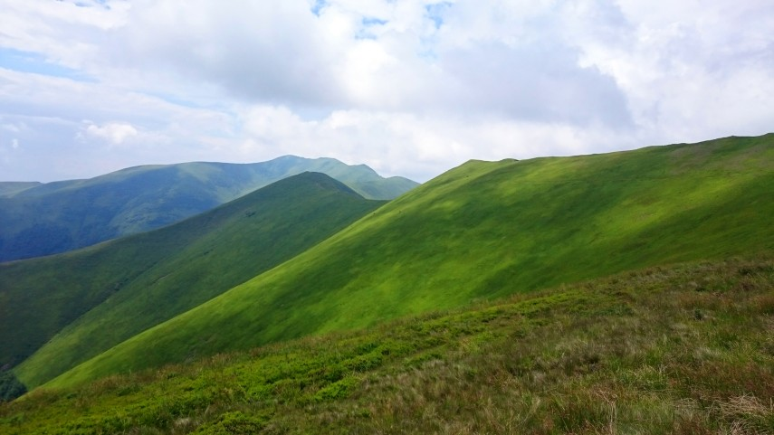
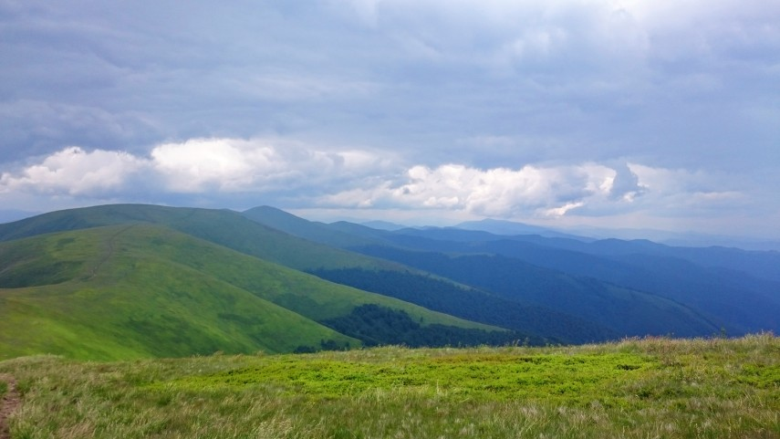
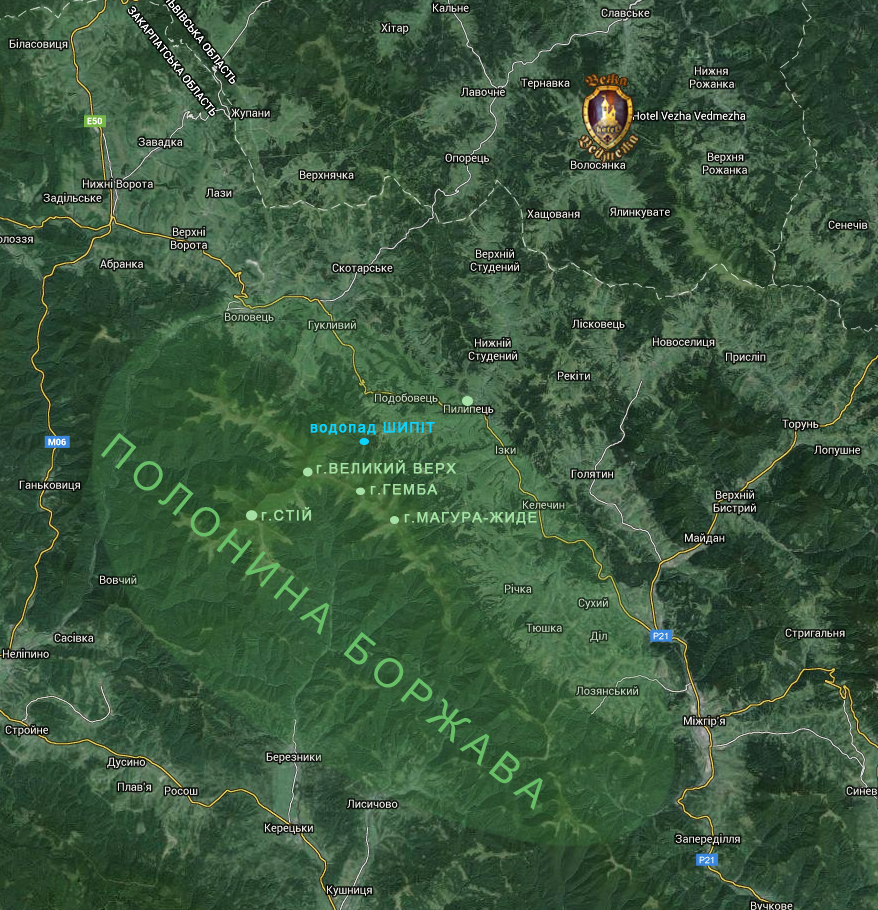
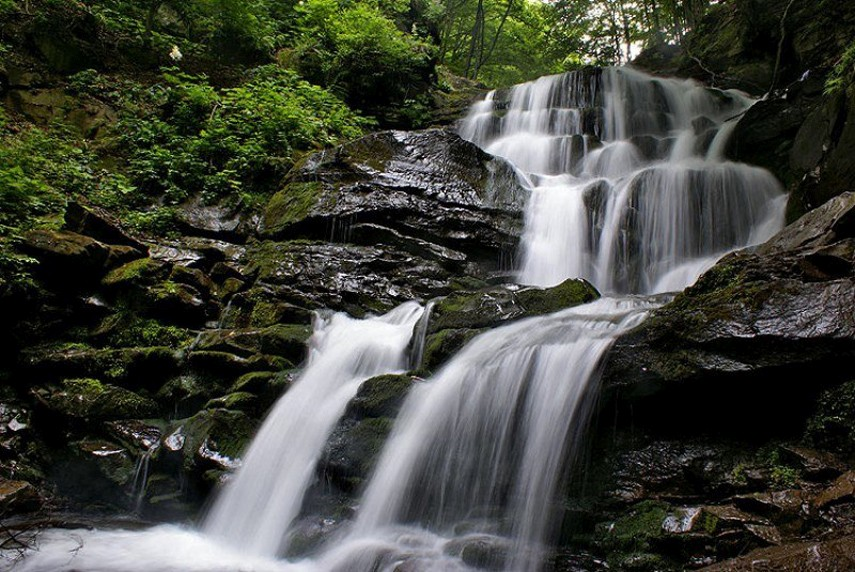
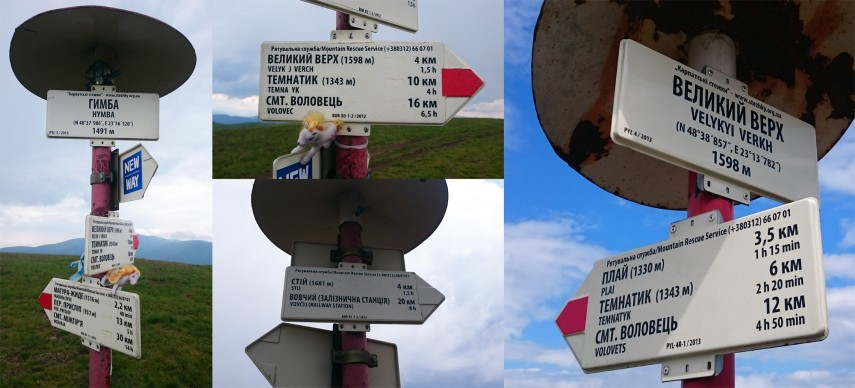

Друзі, запрошуємо Вас у похід Карпатами — помандрувати мальовничим карпатським хребтом Боржава, що є найдовшою закарпатською полониною (полонина — це безлісна ділянка високих гір, яка влітку використовується для сінокосу та для випасання овець пастухами).
Піша подорож Боржавою подарує Вам море незабутніх емоцій від вражаючих гірських краєвидів, а також дасть змогу перевірити свою витривалість, бо ж мандрівка буде не короткою і не зовсім легкою. А завбачливо взявши з собою фотоапарат, Ви зможете зробити унікальні світлини карпатських пейзажів і різнотрав'я, які стануть справжньою окрасою Вашоїфото-колекції про відпочинок у Карпатах.
 Відкривши для себе те нереальне відчуття свободи і позачасовості, яке подарують Вам гори, Ви залишите в Карпатах своє серце, яке кликатиме Вас сюди знову і знову…

Маршрут «Боржавський хребет»
Виїзд з «Вежі Ведмежої» (оптимально — приблизно о 9 ранку) машиною готелю у с. Пилипець до витягу (Закарпатська область), час у дорозі приблизно 40 хвилин. Машина чекатиме на Вас у Пилипці до вечора (точний час попередньо узгоджується).
Далі:
- варіант: самостійно піднятися пішим ходом на гору Гембу (1491 м)
- варіант: 2/3 шляху (1100 м) на г. Гембу піднятися витягом (який працює з 10-ї години ранку), суттєво заощадивши час і фізичні сили на подальшу мандрівку.
З гори Гемби далі можна рухатись у двох напрямках:
- -ий напрямок: до гори Магура-Жиде (1516 м; йти 2,2 км приблизно 40 хв.)
- -ий напрямок: шлях до гори Великий Верх (1598 м; йти 4 км приблизно 1,5 год.)
З гори Великий Верх можна:
1) спуститися у село Пилипець, до мальовничого водопаду Шипіт та скуштувати смачний місцевий шашличок :)
2) повернутися назад у Пилипець на крісельному підйомнику
Якщо мати час «з запасом», то з гори Великий Верх можна піти до гори Стій, 1681 м. Це приблизно 4 км шляху і 1,5 години в одну сторону, тобто мандрівка займе приблизно на 3 години довше часу.
Поради мандрівникам
- Ваше взуття має бути виключно зручним і міцним.
- Там, «наверху», постійно дмуть сильні вітри і температура повітря дещо нижча, ніж у долині, тому треба взяти відповідний для такої погоди одяг і головний убір;
- З собою у подорож беріть тільки найнеобхідніше: перекус, пляшка води, заряджений мобільний телефон.
- У сонячну погоду рекомендується одягати сонцезахисні окуляри, а також, при необхідності, використовувати сонцезахисний крем, який вбереже Ваше обличчя від обгоряння.